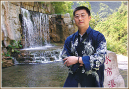

个人介绍
楷书作品
行草作品
草书作品

个人介绍
庄辉，号无名山人。1959年7月生，籍江苏泗阳。曾插过队，为中国书法家协会会员，国家高级美术师，江苏省淮安书画院专职画师。
庄辉少年习字，涉艺三十余载。师从谢冰岩、过立人等书家。曾就读于北京大学书艺研究班，北京荣宝斋画院高级研修班。习字前十五年主颜楷风范，兼习碑、籀诸体，打下了较坚实的基本功。出版有《繁难字体楷书法》、《庄辉书法作品集》等专著。
©2017淮安书画院 建议分辨率：1280×720